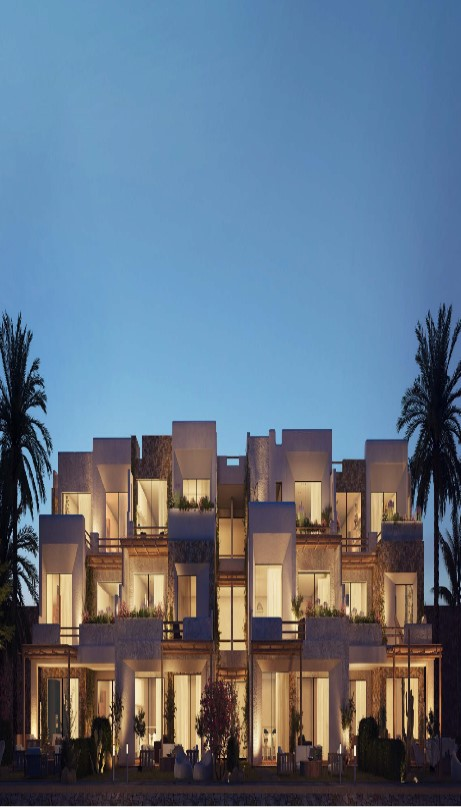

- تقديم خدمات استثمارية متميزة: وتهدف الشركة إلى تقديم خدمات استثمارية فريدة ومتميزة تلبي توقعات العملاء وتحقق أعلى العوائد الاستثمارية. وتشمل هذه الخدمات الاستشارات العقارية، وتقييم الاستثمارات المحتملة، وإدارة الممتلكات.
- تعزيز الثقة والمصداقية: تحرص الشركة على بناء علاقات طويلة الأمد مع العملاء والمستثمرين، من خلال تقديم خدمات عالية الجودة والالتزام بالمعايير المهنية. تعمل الشركة على زيادة الثقة والمصداقية في السوق العقاري من خلال توفير المعلومات الدقيقة والشفافة وتقديم الحلول الاستثمارية المناسبة.
- التطوير التقني المستمر: تولي شركة إم 2 للتطوير للاستثمار العقاري اهتماماً كبيراً بالابتكار والتطوير التقني في مجال الاستثمار العقاري. تستخدم الشركة أحدث التقنيات والأدوات لتحليل السوق وتقديم توصيات استثمارية دقيقة.
شركة إم تو للتطوير العقاري

